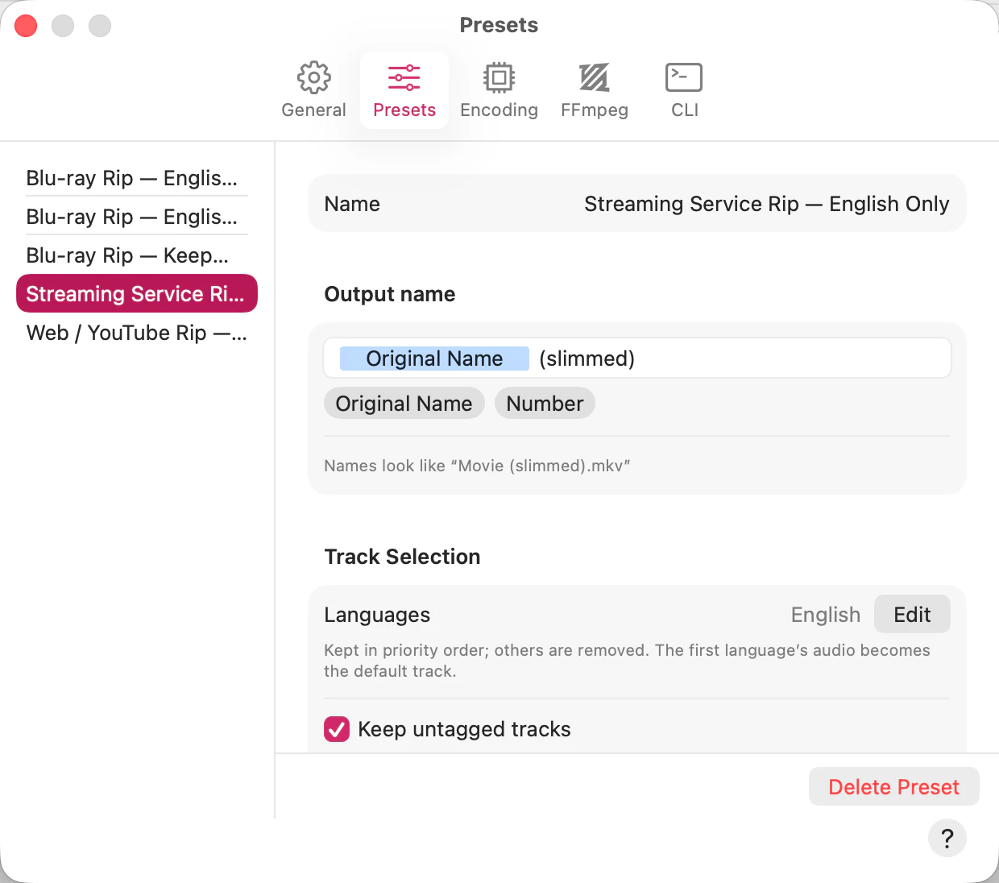

Eine Voreinstellung ist eine benannte Reihe von Regeln für zu behaltende Spuren. Wenn du herausgefunden hast, was eine bestimmte Art von Rip braucht, musst du es durch Sichern nie wieder herausfinden.


Um eine anzuwenden, wähle sie im selben Menü. Die Warteschlange übernimmt ihre Regeln sofort.
Diesen Teil von SubTrack solltest du verstehen, weil er beim ersten Mal wie ein Fehler aussieht.
Das Voreinstellungsmenü zeigt nicht, was du zuletzt angeklickt hast. Es zeigt, welcher Voreinstellung die aktuellen Regeln entsprechen. Wende „Blu-ray-Rip – Nur Englisch“ an und füge dann eine Sprache hinzu, und das Menü zeigt nicht mehr „Blu-ray-Rip – Nur Englisch“ – weil die Regeln nicht mehr die dieser Voreinstellung sind. Stattdessen steht dort „(Neue Voreinstellung)“: Du hast eine Reihe von Regeln, die keiner gesicherten Voreinstellung entspricht.
Entferne die Sprache wieder, und das Menü zeigt wieder „Blu-ray-Rip – Nur Englisch“, ohne dass du etwas erneut anwendest. Nichts ging verloren, und die Voreinstellung wurde nie geändert – beim Anwenden einer Voreinstellung werden ihre Regeln in die Warteschlange kopiert, die Warteschlange wird nicht an sie gebunden.
„(Neue Voreinstellung)“ ist also eine Einladung, keine Warnung: Sichere diese Regeln, wenn du sie behalten möchtest.
SubTrack liefert fünf Starter aus, gruppiert danach, woher die Datei stammt – das entscheidet sowohl darüber, welche Spuren behaltenswert sind, als auch darüber, welche Codecs sich zu kopieren lohnen.
Die Einstellung, die die meisten von ihnen unterscheidet, ist, ob Spuren ohne Sprachangabe behalten werden. Studio-Discs markieren alles, daher verwerfen die ersten beiden sie als Ballast; Web- und Streaming-Rips liefern sehr oft eine einzige Tonspur ohne Sprachangabe, die der gesamte Soundtrack ist, daher behalten die übrigen sie. Siehe Festlegen, welche Sprachen behalten werden.
Die Starter sind vom ersten Moment an gewöhnliche Voreinstellungen – SubTrack schützt oder stellt sie nicht wieder her. Bearbeite sie nach Belieben oder lösche die, die du nicht brauchst.
Das Löschen einer Voreinstellung berührt keine Warteschlange. Eine Warteschlange, die diese Regeln verwendet hat, behält sie – sie hält eine Kopie, keinen Verweis –, nur ihr Voreinstellungsmenü zeigt nun „(Neue Voreinstellung)“.